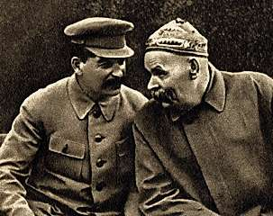

Борис Акунин
Мой календарь
Алексей Максимович Пешков, появившийся на свет 28 марта 1868 года, преподал нам своей жизнью очень важный и очень печальный урок.
Помните, мы вспоминали английского короля Карла Первого, который продемонстрировал, что никогда не поздно, хоть в самый последний день жизни, улучшить свою репутацию в глазах потомков? Так вот Алексей Максимович убедительно доказал, что возможно и обратное: взять и напоследок испоганить в высшей степени достойную жизнь.
Ах, какая это была красивая биография! Мальчик-сирота, выросший в пошлой и скотской среде, в лишениях и унижениях, одними лишь собственными усилиями - внутренней энергией, упорством, талантом, стремлением ввысь - стал выдающимся писателем и драматургом, чье имя в начале ХХ века заслуженно прославилось на весь мир.
А как он был хорош в своих общественных поступках! Всегда на стороне гонимых, всегда бесстрашный, всегда против палачей - хоть царских, хоть большевистских.
И всё, всё это Горький перечеркнул, унизил и растоптал последним периодом своей жизни. Когда, прельщенный лестью и деньгами, задуренный ловкими кукловодами, вернулся к Сталину и послушно исполнял все указания этого беса.
«Великий пролетарский писатель» призывал уничтожать врага, если тот не сдается. Прославлял чекистов. «В нашей стране даже камни поют», провозгласил Алексей Максимович в 1936 году. Попробовал бы кто тогда не запеть…
Для меня на одной чаше весов - книги Максима Горького, их много, и они замечательные. А на другой небольшой очерк «Соловки». Дмитрий Сергеевич Лихачев, узник кошмарного Соловецкого лагеря, рассказывает, как некий отчаянной храбрости мальчик-заключенный прорвался к высокому гостю и рассказал ему всю правду о пытках и казнях. Писатель поплакал, уплыл на красивом пароходе и потом написал «Соловки», где восхищался великим экспериментом по перевоспитанию преступников. А мальчик бесследно исчез. Вторая чаша, где очерк, перевешивает.
В общем, учимся у Горького хорошему. Плохому не учимся.